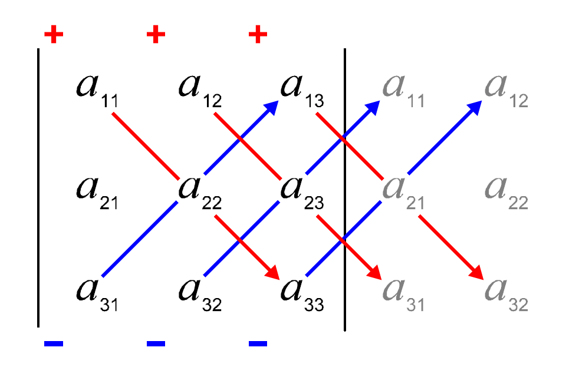

Curso cero de Matemáticas para Grados
Universidad CEU San Pablo
Una matriz es una tabla rectangular de números organizada en filas y columnas.
\[ A = \begin{bmatrix} a_{11} & a_{12} & \cdots & a_{1n} \\ a_{21} & a_{22} & \cdots & a_{2n} \\ \vdots & \vdots & \ddots & \vdots \\ a_{m1} & a_{m2} & \cdots & a_{mn} \end{bmatrix} \]
Una matriz con \(m\) filas y \(n\) tiene dimensión \(m \times n\).
Ejemplo 1 \[ A = \begin{bmatrix} 1 & 2 & 3 \\ 4 & 5 & 6 \end{bmatrix} \]
es una matriz de dimensión \(2 \times 3\) (2 filas y 3 columnas).
La suma/resta de dos matrices \(A\) y \(B\) de igual dimensión \(m\times n\) es otra matriz de la misma dimensión \(m\times n\), cuyos elementos se obtienen sumando/restando los elementos de \(A\) y \(B\) que ocupan las mismas posiciones.
\[ (A \pm B)_{ij} = a_{ij} \pm b_{ij} \]
Ejemplo 2 \[ \begin{bmatrix} 1 & 2 \\ 3 & 4 \end{bmatrix} + \begin{bmatrix} 5 & 6 \\ 7 & 8 \end{bmatrix} = \begin{bmatrix} 6 & 8 \\ 10 & 12 \end{bmatrix} \]
El producto de una matriz \(A\) de dimensión \(m\times n\) por un escalar \(\lambda\) es otra matriz de igual dimensión \(m\times n\), que se obtiene multiplicando cada elemento de la matriz por el escalar.
\[ (\lambda A)_{ij} = \lambda \cdot a_{ij} \]
Ejemplo 3 \[ 2 \cdot \begin{bmatrix} 1 & 2 \\ 3 & 4 \end{bmatrix} = \begin{bmatrix} 2 & 4 \\ 6 & 8 \end{bmatrix} \]
El producto de una matriz \(A\) de dimensión \(m \times n\) por una matriz \(B\) de dimensión \(n \times p\) es otra matriz \(C\) de dimensión \(m \times p\), cuyos elementos se obtienen multiplicando las filas de \(A\) por las columnas de \(B\) y sumando los productos.
\[ C = A \cdot B, \quad c_{ij} = \sum_{k=1}^n a_{ik} b_{kj} \]
Para poder multiplicar dos matrices, el número de columnas de la primera debe ser igual al número de filas de la segunda.
Ejemplo 4 \[ \begin{bmatrix} 1 & 2 & 3\\ 4 & 5 & 6\\ \end{bmatrix} \cdot \begin{bmatrix} 1 & 2 \\ 3 & 4 \\ 5 & 6 \\ \end{bmatrix} = \begin{bmatrix} 1\cdot1 + 2\cdot3 + 3\cdot5 & 1\cdot2 + 2\cdot4 + 3\cdot6 \\ 4\cdot1 + 5\cdot3 + 6\cdot5 & 4\cdot2 + 5\cdot4 + 6\cdot6 \\ \end{bmatrix} = \begin{bmatrix} 22 & 28 \\ 49 & 64 \\ \end{bmatrix} \]
La transpuesta de una matriz \(A\) de dimensión \(m \times n\) es otra matriz \(A^T\) de dimensión \(n \times m\), cuyos elementos se obtienen intercambiando las filas por las columnas.
\[ A^T_{ij} = a_{ji} \]
Ejemplo 5 \[ \begin{bmatrix} 1 & 2 & 3\\ 4 & 5 & 6 \end{bmatrix}^T = \begin{bmatrix} 1 & 4 \\ 2 & 5 \\ 3 & 6 \end{bmatrix} \]
El determinante de una matriz cuadrada \(A\) de dimensión \(2 \times 2\) se define como: \[ |A| = \begin{vmatrix} a & b \\ c & d \end{vmatrix} = ad - bc \]
El determinante de una matriz \(B\) de dimensión \(3 \times 3\) se define como:
\[ |a| = \begin{vmatrix} a & b & c \\ d & e & f \\ g & h & i \end{vmatrix} = aei + bfg + cdh - ceg - bdi - afh \]
Esta es más fácil de recordar con la regla de Sarrus:

Ejemplo 6 \[ \begin{vmatrix} 1 & 2 \\ 3 & 4 \end{vmatrix} = 1\cdot4 - 2\cdot3 = -2 \]
\[ \begin{vmatrix} 1 & 2 & 3 \\ 4 & 5 & 6 \\ 7 & 8 & 9 \end{vmatrix} = 1\cdot 5\cdot 9 + 2\cdot 6\cdot 7 + 3\cdot 4\cdot 8 - 3\cdot 5\cdot 7 - 2\cdot 4\cdot 9 - 1\cdot 6\cdot 8 = 0 \]
La inversa de una matriz cuadrada \(A\) de dimensión \(n \times n\) es otra matriz \(A^{-1}\) de la misma dimensión, tal que: \[ A \cdot A^{-1} = A^{-1} \cdot A = I \]
Para matrices de dimiensión \(2 \times 2\) se tiene
\[ A = \begin{bmatrix} a & b \\ c & d \end{bmatrix}, \quad A^{-1} = \frac{1}{ad - bc} \begin{bmatrix} d & -b \\ -c & a \end{bmatrix} \]
Una matriz tiene inversa si y solo si su determinante es distinto de cero.
Ejemplo 7 \[ A = \begin{bmatrix} 1 & 2 \\ 3 & 4 \end{bmatrix}, \quad A^{-1} = \frac{1}{-2} \begin{bmatrix} 4 & -2 \\ -3 & 1 \end{bmatrix} = \begin{bmatrix} -2 & 1 \\ 1.5 & -0.5 \end{bmatrix} \]